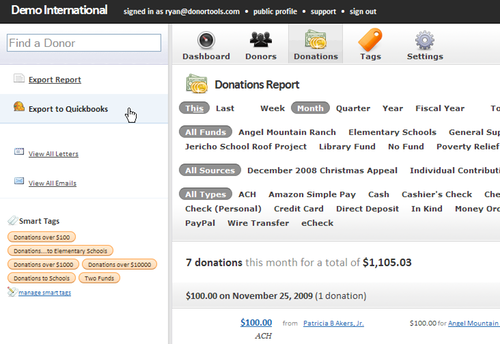
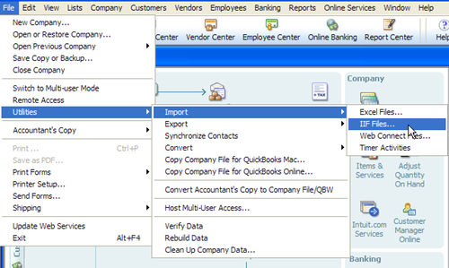
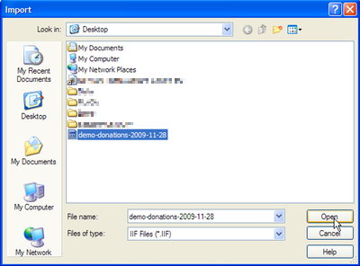
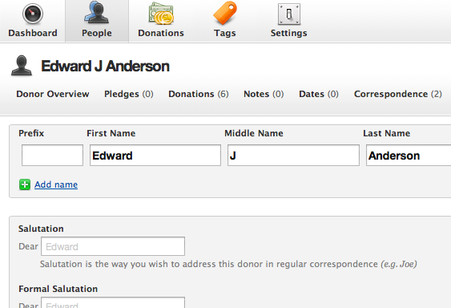
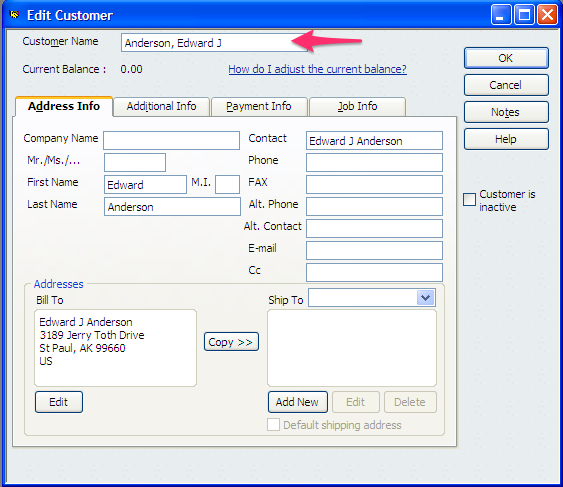

How to Export Data to Quickbooks
Exporting data from Donor Tools to Quickbooks is really easy. To export donation data:
- Navigate to the Donations tab
- Select a date range that you’d like to export
- Click “Export to Quickbooks”.

Donor Tools will generate a Quickbooks-format IIF file that you can then import to Quickbooks. To import this file into Quickbooks:
- Back up your Quickbooks database *
- Go to the File menu (in Quickbooks)
- Select Import
- Select “IIF files”
- Find the file that you just downloaded and click “Open”.


After the file has been imported into Quickbooks, you’ll be able to see any new donors in Quickbooks’ Customers page. All the donations that you just imported will be in Undeposited Funds. You’ll need to make a deposit according to your bank statement, and then reconcile as you normally do.
Donors are exported as Quickbooks Customers. Donor Tools also exports the donor’s contact information that’s stored in Donor Tools: address, email, and phone number.
Donor Tools Funds are exported as Quickbooks Classes. If you use classes to track your programs, Donor Tools will assign each donation to the appropriate class. If you don’t use classes, that’s alright, Quickbooks will import the classes anyway, but they won’t be displayed on your reports. Here are some examples of Funds/Classes:
- Building Fund
- Inner City Missions Project
- Orphanage Support Fund
Donor Tools Sources are exported as Quickbooks Income Accounts, and a special Item is created in Quickbooks for each source. Here are some examples of Sources:
- Individual Contributions
- Tithes & Offerings
- Online Donations
- Golf Fundraiser
- Christmas Appeal Letter
Donations are exported to Quickbooks as Sales Receipts. Each donation becomes a separate Quickbooks sales receipt. This way, each donation is credited to the donor (or “customer”) in Quickbooks, and the donation is also credited to the appropriate income account (Source). Splits are recorded as separate income items under each sales receipt.
How To Match Existing Customers In QuickBooks
QuickBooks Customers are analogus to Donor Tools Donors. Donor Tools will export donors in the format “Last Name, First Name Middle Name”. For example, a donor in Donor Tools with first name “Edward”, last name “Anderson”, and Middle Initial “J” would be exported as “Anderson, Edward J”.

To be sure that donors in the exported file match your existing QuickBooks customers, ensure that the “Customer Name” field for each customer in QuickBooks format is in the proper format (“Last Name, First Name Middle Name”).

If you do end up with a duplicate in QuickBooks that can be easily resolved by renaming the customer. Give both customers the same name, and QuickBooks will prompt you to merge the two records together. Double-check the “Customer Name” field to be sure that Donor Tools matches the correct customer for the next export.
* IMPORTANT: Why Back up your QuickBooks Database?
QuickBooks has no way of protecting against duplicate entries. So if you accidentally export the same donation twice from Donor Tools, you’ll end up with duplicate entries in QuickBooks.
Here are some helpful resources for Quickbooks:
- Running QuickBooks in Nonprofits By Kathy Ivens: Amazon or read it online
- Intuit Community Help with Quickbooks